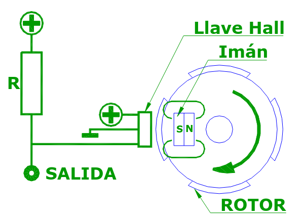
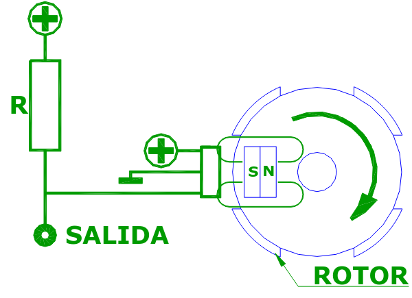
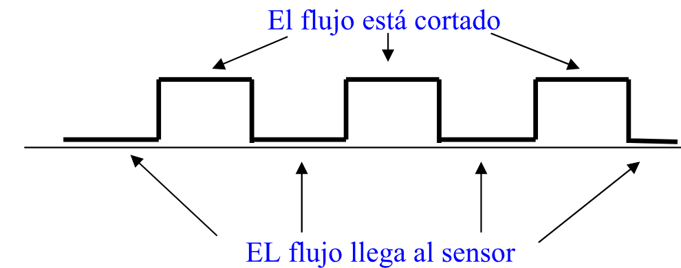
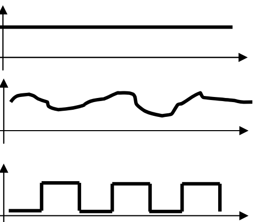
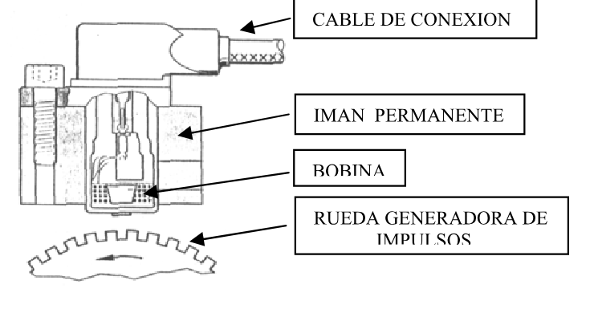

¿Qué es un sensor?
El que le cuenta a la computadora qué está pasando.
Los sensores son dispositivos que generan información eléctrica (una tensión o una corriente) a partir de magnitudes físicas o químicas: temperatura, presión, humedad, posición, velocidad.
Gran parte del avance de la electrónica en el auto se debe a la evolución de los sensores. La computadora (ECU o módulo de control) no puede «sentir» la temperatura del motor ni ver la posición del árbol de levas: solo puede medir tensiones. Cada sensor traduce lo que pasa en el motor a una tensión que la ECU sabe leer.
Ya viste dos: el potenciómetro (posición) y el NTC (temperatura). En esta página, dos sensores que detectan giro y posición: la llave Hall y el sensor inductivo.
La llave Hall
Un interruptor que se cierra con un imán.
La llave Hall es un dispositivo electrónico que reacciona al magnetismo. Cuando recibe un flujo magnético de cierta intensidad y orientación, conmuta su salida: pasa de estar abierta (desconectada) a estar conectada a masa.
Se usa para detectar la posición de piezas que giran. En el auto, para saber la posición del árbol de levas o, en los encendidos con distribuidor, la posición del rotor del distribuidor para definir el momento de la chispa.
Cómo se arma
Frente a la llave Hall hay un imán. Entre los dos gira un rotor de hierro con ventanas. La salida de la llave se conecta al + a través de un resistor R (en la ECU, este resistor suele estar adentro).


¿Por qué alta y por qué baja? (con Ohm y Kirchhoff)
Llave abierta (flujo cortado): no hay camino a masa, así que por R no circula corriente. Si I = 0, la caída en R es V = I × R = 0 V. Toda la tensión llega a la salida: salida ≈ tensión de batería.
Llave cerrada (ventana): la salida queda unida a masa, o sea 0 V. Ahora toda la tensión de la batería cae sobre R (2ª regla de Kirchhoff), y por R circula una corriente I = V ÷ R.
La señal que sale
A medida que el rotor gira, se alternan hierro y ventanas, y la salida pasa de alta a baja una y otra vez. El resultado es una sucesión de pulsos: una onda cuadrada.

El módulo de encendido o la ECU toma esa señal y, por la posición de los pulsos, determina el instante exacto de la chispa. Por la cantidad de pulsos por segundo sabe además a qué velocidad gira el rotor.
Para recordar
- Flujo cortado → llave abierta → salida alta (≈ batería).
- Flujo llega al sensor → llave a masa → salida baja (0 V).
- Con el rotor girando, la salida es una onda cuadrada.
Tensiones que cambian y el valor medio
Qué marca el tester cuando la tensión no es constante.
No todas las tensiones continuas son iguales. La guía distingue tres:

- Continua pura: siempre el mismo valor, como la de una batería.
- Continua variable: siempre positiva, pero sube y baja.
- Continua variable con forma de onda cuadrada: salta entre dos valores, como la salida de la llave Hall.
En los tres casos el tester muestra un solo número, sin distinguir la forma de la tensión: el valor medio, o sea el promedio de la tensión a lo largo del tiempo.
Valor medio de una onda cuadrada
Para una onda que salta entre 0 V y un valor alto, el promedio depende de qué fracción del tiempo está arriba. Hacen falta tres conceptos:
- Período (T): lo que tarda un ciclo completo (un tramo alto más un tramo bajo). Se mide en segundos o milisegundos (ms).
- Ciclo de trabajo: qué parte del período está en alto. Se expresa en %: ciclo = talto ÷ T × 100.
- Frecuencia (f): cuántos ciclos hay por segundo. Se mide en hertz (Hz): f = 1 ÷ T.
Vmedio = Valto × ciclo de trabajo
Ejemplo: una onda que salta entre 0 y 12 V, con un período de 10 ms, de los cuales 4 ms está en alto.
Ciclo de trabajo = 4 ÷ 10 = 0,4 → 40 %.
Vmedio = 12 × 0,4 = 4,8 V. Eso es lo que marca el tester.
Frecuencia: T = 10 ms = 0,01 s → f = 1 ÷ 0,01 = 100 Hz.
Por eso, si se mide con el tester la salida de la llave Hall con el rotor girando, no aparece ni 12 V ni 0 V, sino un valor intermedio. Si la salida está la mitad del tiempo alta y la mitad baja, el tester marca la mitad de la tensión de batería.
El osciloscopio
El tester solo da el promedio. Para ver la forma de la tensión se usa el osciloscopio: dibuja en su pantalla un trazo que sigue las variaciones de la tensión en el tiempo. Con él se ve si los pulsos de un sensor tienen la altura, la forma y la frecuencia correctas, algo que el tester no puede mostrar.
Para recordar
- Con una tensión que cambia, el tester marca el valor medio.
- En una onda cuadrada de 0 a Valto: Vmedio = Valto × ciclo de trabajo.
- El osciloscopio permite «ver» la forma de onda que entregan los sensores y así saber si es correcta.
Control por PWM
Modulación por ancho de pulso: controlar con el promedio.
Muchos actuadores —motores, electroválvulas, electroimanes— responden al valor medio de la tensión que reciben. No necesitan una continua pura: se los puede alimentar con pulsos, y se comportan como si recibieran el promedio.
La ECU aprovecha esto. En vez de generar una tensión de, por ejemplo, 4,8 V (algo complicado), conecta y desconecta la batería muy rápido, siempre a la misma frecuencia, y cambia cuánto tiempo deja conectado en cada ciclo. Eso es PWM (Pulse Width Modulation, modulación por ancho de pulso).
Ejemplo en el auto: algunas válvulas de ralentí abren más o menos un paso de aire para mantener estable el régimen del motor. La ECU las controla con PWM: si necesita más aire, aumenta el ancho de los pulsos, sube el valor medio, y la válvula abre más.
Ejemplo: con 12 V, si la ECU necesita 7,2 V de valor medio, el ciclo de trabajo tiene que ser 7,2 ÷ 12 = 0,6 → 60 %.
Para recordar
- En PWM la frecuencia es fija; lo que cambia es el ancho del pulso (el ciclo de trabajo).
- Más ancho de pulso → más valor medio → el actuador hace más fuerza o abre más.
- El control por ancho de pulso es muy adecuado para el procesamiento digital de los módulos de control: solo tienen que prender y apagar.
El sensor inductivo
Un imán, una bobina y una rueda dentada.
Junto con los termistores, es uno de los sensores más antiguos del auto. También se lo llama captor inductivo. Es muy robusto porque está formado solamente por una bobina y un imán permanente, sin electrónica.

Frente al sensor gira una rueda dentada de hierro, la «rueda generadora de impulsos» o rueda fónica. Cada vez que pasa un diente, cambia el campo magnético que atraviesa la bobina, y por inducción electromagnética la bobina genera una tensión. No necesita alimentación: el sensor genera su propia tensión.
Qué señal entrega
- Es una tensión alterna: tiene semiciclos positivos y semiciclos negativos. Por eso se mide con el tester en el sector V~, no en V⎓.
- Su frecuencia depende de la velocidad de la rueda: cuanto más rápido gira, más dientes pasan por segundo y más ciclos por segundo hay. La ECU usa la frecuencia para saber a qué velocidad gira la rueda.
- Su amplitud (la altura de la onda) también aumenta con la velocidad. A muy pocas vueltas la señal es tan chica que casi no se puede leer.
Cómo calcular la frecuencia: cada diente que pasa produce un ciclo. Entonces:
f = cantidad de dientes × vueltas por segundo
Y vueltas por segundo = rpm ÷ 60.
Ejemplo: una rueda de 60 dientes girando a 600 rpm da 600 ÷ 60 = 10 vueltas por segundo → f = 60 × 10 = 600 Hz.
Lo mismo vale para la llave Hall: cada ventana del rotor produce un pulso.
Se usa, por ejemplo, como sensor de rpm y posición del cigüeñal y como sensor de velocidad de rueda en el ABS. Igual que con la llave Hall, la mejor forma de revisarlo es con el osciloscopio.
Llave Hall y sensor inductivo, comparados
| Llave Hall | Sensor inductivo | |
|---|---|---|
| Partes | Llave electrónica, imán, rotor con ventanas | Bobina, imán, rueda dentada |
| Necesita alimentación | Sí (y un resistor R a positivo) | No, genera su propia tensión |
| Señal | Onda cuadrada, siempre positiva (continua pulsante) | Tensión alterna (+ y −) |
| Altura de la señal | Fija: de 0 V a la tensión de alimentación | Aumenta con la velocidad |
| Frecuencia | En los dos aumenta con la velocidad de giro | |
| Con el tester se mide en | V⎓ (marca el valor medio) | V~ |
Ejercicios
Escribí el resultado en la unidad que pide cada consigna y comprobá.